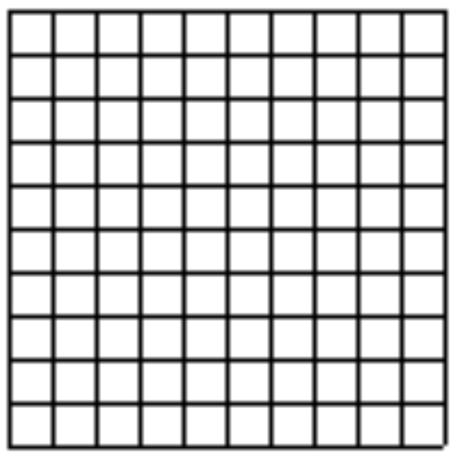
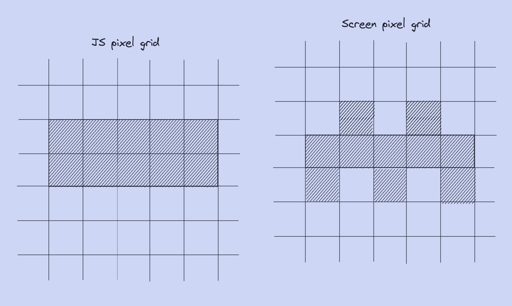
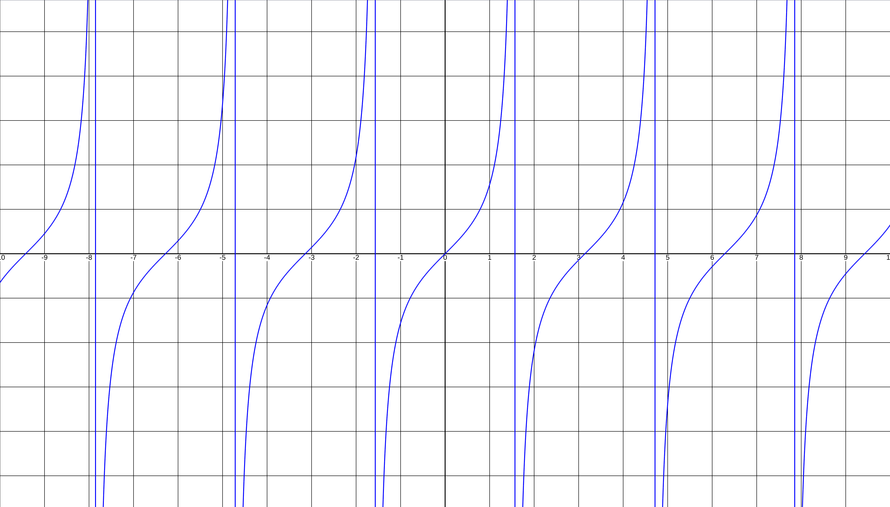
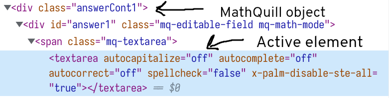

Orion
Andrews
Andrews
The
Design
2
Design
2
The continued design of my calculator project.
Code
I encountered a lot of problems over time with the design of
the software for my calculator. I did, and still continue
to, program with features in mind rather than basic
principles. This was also my first real rodeo trying to make
an Electron app. Thankfully, my code does not touch the IPC
capabilities of Electron and so I did not really have to
spend time doing anything other than making a webapp, that
just so happened to run natively.
The first struggle was figuring out how I was going to take math input. I mentioned this earlier, and as it was large part of the design, I wanted to talk about it. I started by trying to use the standard HTML input boxes as you can see in the first couple images of the regular calculator gif that you can see on the previous page. This was a horrible idea. Firstly, it would be incredibly difficult to make any responsive math input, an instant deal breaker. Secondly, the output of these input boxes would be tough to turn into an easily parseable format. Thirdly and finally, keeping track of inputs and using a middleman to make something like alt+p mean pi would be much more difficult.
So I quickly switched to MathQuill. MathQuill is relatively easy to use, you just load the mathquill.js file in a script tag of your HTML file before your regular js file and you can simply instantiate a MathQuill input box using the MQ.MathField function on a regular HTML element.
The first struggle was figuring out how I was going to take math input. I mentioned this earlier, and as it was large part of the design, I wanted to talk about it. I started by trying to use the standard HTML input boxes as you can see in the first couple images of the regular calculator gif that you can see on the previous page. This was a horrible idea. Firstly, it would be incredibly difficult to make any responsive math input, an instant deal breaker. Secondly, the output of these input boxes would be tough to turn into an easily parseable format. Thirdly and finally, keeping track of inputs and using a middleman to make something like alt+p mean pi would be much more difficult.
So I quickly switched to MathQuill. MathQuill is relatively easy to use, you just load the mathquill.js file in a script tag of your HTML file before your regular js file and you can simply instantiate a MathQuill input box using the MQ.MathField function on a regular HTML element.
<p><span id="answer">x=</span></p>
<script>
var answerSpan = document.getElementById('answer');
var answerMathField = MQ.MathField(answerSpan, {
handlers: {
edit: function() {
// .latex() to get entered math in LaTeX format
var enteredMath = answerMathField.latex();
checkAnswer(enteredMath);
}
}
});
</script>
Note: all of this demo code is taken from the MathQuill
documentation.
This was great, I started with using the static function to test that the library was loaded correctly and then I moved the dynamic box shown above. Here was where I started being a bit of an idiot. I decided that now was the time to figure out how to get my input from those boxes. I was unfathomably naïve and I only thought of MathQuill as a way to style my input and so I completely ignored the documenation and I spent a week writing code to check the user's most recent inputs, complete SEPARATE from my input boxes. I was effectively polling for a new input and keeping that recent input in an array behind the scenes. None of you deserve to have to look at that code and so I won't add it.
Needless to say, I figured out what I was doing was a bad idea and I happened to notice the neat little .latex() function in the demo I showed above. Even more important were the built-in handlers to a MathQuill object. One of which you can see above, called edit, and one you cannot see, called enter. These are pieces of code that would be executed on the edit and enter of a MathQuill object. There were also tonnes more API methods in the documentation. Things like executing a keystroke, entering a LaTeX command, and of course, getting the current value of the input box in LaTeX form.
This was super cool, but now I needed to do something with that outputted LaTeX, it would be a pretty rubbish calculator if it just showed you what you inputted. So, along came the source of most of my development pain, Evaluatex. I really don't want this to be put-down on the developer of Evaluatex (who will likely never read this) as Evaluatex is awesome, it just has some annoying quirks.
Anyways, Evaluatex evaluates LaTeX. You use it quite simply, just call the function on some LaTeX expression.
This was great, I started with using the static function to test that the library was loaded correctly and then I moved the dynamic box shown above. Here was where I started being a bit of an idiot. I decided that now was the time to figure out how to get my input from those boxes. I was unfathomably naïve and I only thought of MathQuill as a way to style my input and so I completely ignored the documenation and I spent a week writing code to check the user's most recent inputs, complete SEPARATE from my input boxes. I was effectively polling for a new input and keeping that recent input in an array behind the scenes. None of you deserve to have to look at that code and so I won't add it.
Needless to say, I figured out what I was doing was a bad idea and I happened to notice the neat little .latex() function in the demo I showed above. Even more important were the built-in handlers to a MathQuill object. One of which you can see above, called edit, and one you cannot see, called enter. These are pieces of code that would be executed on the edit and enter of a MathQuill object. There were also tonnes more API methods in the documentation. Things like executing a keystroke, entering a LaTeX command, and of course, getting the current value of the input box in LaTeX form.
This was super cool, but now I needed to do something with that outputted LaTeX, it would be a pretty rubbish calculator if it just showed you what you inputted. So, along came the source of most of my development pain, Evaluatex. I really don't want this to be put-down on the developer of Evaluatex (who will likely never read this) as Evaluatex is awesome, it just has some annoying quirks.
Anyways, Evaluatex evaluates LaTeX. You use it quite simply, just call the function on some LaTeX expression.
let fn = evaluatex(latestInput.toString());
let result = +fn().toFixed(10);
In this case, the LaTeX expression is latestInput, fn is
sort of an intermediary step where you can pass arguments
into fn({args}) before finally storing the result in a
variable, in this case result.
Now what about those pains I have with Evaluatex? Well, the biggest of all of them is that some of the constants that you are supposed to be able to evaluate, are not congruent with actual LaTeX.
For example, in LaTeX, to represent the symbol π, you would express it with \pi. The backslash is a delimiter that takes the LaTeX parsing out of its normal flow to tell it you are doing something special (something that isn't a normal number), and pi is just the way π is represented. Evaluatex represents π with PI. This is annoying but reasonably easy to fix by adding in a middleman that replaces all \pi outputted by MathQuill with the PI that Evaluatex requires. However, this breaks when you try to go for the same approach with another misrepresented constant, e (euler's number). e is represented with a lowercase e in mathematics, it's just the standard, in Evaluatex however, e is represented with an uppercase E. The problem with trying to replace all 'e' with 'E' is that some symbols in LaTeX are represented with a word.
For example, here is a small expression that I cooked up: \left(\frac{4^2}{6}\right). This reads as (4^2/6). You can see, in LaTeX, parenthesis are represented with "\left". Replacing all 'e' with 'E' would break this expression. There might be a way around this involving making sure all characters are lowercase in the expression, but I haven't implemented it, I'm just talking about some pains I have with Evaluatex.
Another set of challenges I encountered were in the graphing department. Creating a graph is simple, you just loop through a bunch of x coordinates and draw lines down the height of the page at a certain interval. You then do the same thing, but with the y coordinates, drawing lines every certain interval across the width of the page (making sure it is the same pixel interval as you draw line vertically so you get square boxes). It might look something like this:
Now what about those pains I have with Evaluatex? Well, the biggest of all of them is that some of the constants that you are supposed to be able to evaluate, are not congruent with actual LaTeX.
For example, in LaTeX, to represent the symbol π, you would express it with \pi. The backslash is a delimiter that takes the LaTeX parsing out of its normal flow to tell it you are doing something special (something that isn't a normal number), and pi is just the way π is represented. Evaluatex represents π with PI. This is annoying but reasonably easy to fix by adding in a middleman that replaces all \pi outputted by MathQuill with the PI that Evaluatex requires. However, this breaks when you try to go for the same approach with another misrepresented constant, e (euler's number). e is represented with a lowercase e in mathematics, it's just the standard, in Evaluatex however, e is represented with an uppercase E. The problem with trying to replace all 'e' with 'E' is that some symbols in LaTeX are represented with a word.
For example, here is a small expression that I cooked up: \left(\frac{4^2}{6}\right). This reads as (4^2/6). You can see, in LaTeX, parenthesis are represented with "\left". Replacing all 'e' with 'E' would break this expression. There might be a way around this involving making sure all characters are lowercase in the expression, but I haven't implemented it, I'm just talking about some pains I have with Evaluatex.
Another set of challenges I encountered were in the graphing department. Creating a graph is simple, you just loop through a bunch of x coordinates and draw lines down the height of the page at a certain interval. You then do the same thing, but with the y coordinates, drawing lines every certain interval across the width of the page (making sure it is the same pixel interval as you draw line vertically so you get square boxes). It might look something like this:

You might see something off about this though. The lines are incredibly blurry. "Why does this happen?" you might ask, well, I have drawn a handy-dandy diagram to explain it:

Basically, JS has one coordinate system that you can use
that is defined by the size of the canvas element in HTMl
(HTML5 canvas allows for simple pixel manipulation and is
what I use for my graphing) but it might not necessarily
align with the one your screen uses. In this example, I try
to draw a line of width 2 starting at y=1 and having length
5. While those seem like nice numbers, the JS pixel at y=2
will not likely sit exactly on a pixel border on your
screen. This causes some guesswork to occur. Pixels on your
screen will have to snap to the nearest pixel that could
feasibly represent a line at y=2. As in my example, the line
is actually halfway between two pixels on the screen grid,
half of the pixels would be snap to the pixel above, and
half would stay at the midpoint. The more closely your JS pixel grid matches the one of your screen, the less blurring there will be.
This caused me a lot of angst for a long time. The solution ends up being something like this:
let ctx = canvas.getContext('2d');
ctx.imageSmoothingEnabled = false;
// Set display size (css pixels).
let sizeX = canvasCont.getBoundingClientRect().width;
let sizeY = canvasCont.getBoundingClientRect().height;
canvas.style.width = sizeX + "px";
canvas.style.height = sizeY + "px";
// Set actual size in memory (scaled to account for extra pixel density).
let scale = window.devicePixelRatio; // Change to 1 on retina screens to see blurry canvas.
canvas.width = sizeX * scale;
canvas.height = sizeY * scale;
// Normalize coordinate system to use css pixels.
ctx.scale(scale, scale);
This basically takes the canvas (getContext does some other
stuff to it but we don't care) and stores it in a variable
called ctx. It then gets and sets the CSS size of the canvas
to what the actual size of the canvas is and checks the
pixel ratio of the screen. It then scales up the sizes
defined earlier with respect to the scale of the screen and
sets that to the height and width we will use in JS. This is
the most important step because scaling with respect to the
device pixel ratio is what will keep the JS pixel map right
on top of the screen one. You can see the blurry-less lines
in the gif on the last page.
So now you have a good looking grid and you want to start to
draw a function. Well now comes the tough part. In a normal
coordinate system, (0, 0) is often in the middle of the page
as it allows for the most context to be viewed for the most
graphs. But what is (0, 0) in my canvas? In the JS
pixelgrid, (0, 0) is not in the middle of the screen, it is
in the top left. So now you have to redefine a coordinate
system with some common calculations. For example, to plot a
point at (-8, 0), you would need to half the width of the
page, half the height of the page, and then subtract 8 from
the x-value and plot it.
Great, now just set your half-page-height and half-page-width to some common variables and you can base everything around the center of the screen. "But wait!", those grid lines you just plotted are several tens of pixels apart, maybe hundreds if the screen is large enough! If you plot a line that is 8 less than the center of the screen, that will be 8 PIXELS less than the center. You have to scale all of your x and y pixel values by some common scalar so that they align with with the grid you have drawn.
And with that, you should be able to draw a function. Just plug in a bunch of numbers for x, calculate the coordinates and scale them to fit your graph.
Great, now just set your half-page-height and half-page-width to some common variables and you can base everything around the center of the screen. "But wait!", those grid lines you just plotted are several tens of pixels apart, maybe hundreds if the screen is large enough! If you plot a line that is 8 less than the center of the screen, that will be 8 PIXELS less than the center. You have to scale all of your x and y pixel values by some common scalar so that they align with with the grid you have drawn.
And with that, you should be able to draw a function. Just plug in a bunch of numbers for x, calculate the coordinates and scale them to fit your graph.
"But wait!" you may say, "How many should I draw?" you may
ask. Well, why not start with 10,000? That's quite a lot and
will have little to no aliasing for any person with a sane
screensize. You could also draw lines between each point you
draw to make the function, you know, continuous."But wait!"
you might say, "Aren't you running this on a little
raspberry pi?" you might ask. And you'd be right, having a
flat number of points to calculate is an awful idea, let's
make it be the total width of the screen divided by that
arbitrary scale factor from earlier (this was completely
random but works quite well), the only time that would fail
is when your graph has some absurd slope like 100000000x, at
which point, a scale of x = -10 to 10 is not going to be of
much use.
So now I could graph functions quickly and accurately. But
there is an issue, what happens when you graph something
like tan(x)? The math literate among you will know that
tan(x) is asymptotic, that is, every π/2, the values of
tan(x) tend to infinity. But even worse, moving from right
to left, tan(x) tends to NEGATIVE infinity. This
discontinuity means that by connecting the lines between any
two points in sequence, you would end up with a line that
crosses from the highest graphed point, just before x = π/2,
to the lowest graphed point, just after x = π/2. That looks
like this:
The way I fixed this is simply checks if a point is off screen and sets an "offscreen" value to true and doesn't connect a line between it and the next point. Pretty simple fix that makes a world of difference when doing anything trig related.

The way I fixed this is simply checks if a point is off screen and sets an "offscreen" value to true and doesn't connect a line between it and the next point. Pretty simple fix that makes a world of difference when doing anything trig related.
Another set of issues I encountered revolved around the very
nature of HTML5 canvas. HTML5 canvas is what is just a "dumb
pixel grid" (quoted from a random stack overflow user), this
means that once you change a pixel value, the canvas has no
clue what the values of pixel are. It also has no concept of
an object on the screen, so while you might think of one
graph of say, sin(x), as being one object (a long
oscillating line), the canvas does not see it as that.
This caused a lot of issues when it came to dealing with already plotted graphs. If you can't keep track of the already plotted graphs in separate variables, how are you supposed to clear them? Or even alter the same graph slightly? Well, you can't. The way I initially got around this was by keeping an array of all the current functions and rather than drawing a normal graph with a colored line, I just graphed a white line. This is fine if by some miracle your graph has no points that happen to be on top of the grid, but in any other graph, there would be random white markings on the grid.
"Ok, just redraw the grid" I thought to myself. Well, when you redraw the grid, the grid now goes over the non-remove graphs. "Ok, just redraw the graphs" I thought. Well, at that point, wouldn't it just be more efficient to just remove the one specific function and then redraw the entire page? The answer is I don't know, I just went with implementing a clear page button that redrew the entire page but without any of the graphs, just the grid.
The issue is still there though, I can't just deal with a single graph, I have to recalculate in its entirety, there is no manipulating something that already exists. There are libraries that exist to create mutable canvas objects but I didn't feel that one would be worth using for what was supposed to be a simple prototype.
This caused a lot of issues when it came to dealing with already plotted graphs. If you can't keep track of the already plotted graphs in separate variables, how are you supposed to clear them? Or even alter the same graph slightly? Well, you can't. The way I initially got around this was by keeping an array of all the current functions and rather than drawing a normal graph with a colored line, I just graphed a white line. This is fine if by some miracle your graph has no points that happen to be on top of the grid, but in any other graph, there would be random white markings on the grid.
"Ok, just redraw the grid" I thought to myself. Well, when you redraw the grid, the grid now goes over the non-remove graphs. "Ok, just redraw the graphs" I thought. Well, at that point, wouldn't it just be more efficient to just remove the one specific function and then redraw the entire page? The answer is I don't know, I just went with implementing a clear page button that redrew the entire page but without any of the graphs, just the grid.
The issue is still there though, I can't just deal with a single graph, I have to recalculate in its entirety, there is no manipulating something that already exists. There are libraries that exist to create mutable canvas objects but I didn't feel that one would be worth using for what was supposed to be a simple prototype.
In the same vein of objects that don't really exist, I want
to briefly mention the only real issue I had with MathQuill.
I know this is a bit of a detour back to the beginning of
this page but it fits well here. When you create a MathQuill
object, it has a lot of child elements that are created. One
of them is considered the "active element" by JS. And it is
several children deep the element that I can call MathQuill
API methods on.
So in order to extrapolate the name of the MathQuill object from the active textarea, I use this hilarious selector:
Anyways, thats really the only time I have to deal with this sort of thing but it took me a while to solve so I put it in.

So in order to extrapolate the name of the MathQuill object from the active textarea, I use this hilarious selector:
window["answerMathField" + document.activeElement.parentElement.parentElement.id.slice(-1)].cmd('\\sqrt');Anyways, thats really the only time I have to deal with this sort of thing but it took me a while to solve so I put it in.
The last issue I want to talk about is the separation of the
two pages in my calculator. There are two pages (three
acutally but only two are complementary to each other):
graphing and standard calculating. There are a lot of ways
to split these two apart and I tried a lot of methods. The
first thing I tried was to simply have two different HTML
pages and have a keybind that switched to a new HTML page
(just like what the buttons on this website do). This works
great on a broswer, but not so much on an actual Electron
app. Where a regular broswer has one real process (the
renderer), Electron has two processes: a main process and a
child renderer process. The main process has a main window
object that is called on a specific HTML page, switching
those pages from the renderer process break stuff (I don't
fully understand why).
So I decided to try and switch pages the way that Electron
seems to like. It is a configuration that works by pressing
a keybind in the renderer process, that passes an ardument
to a middleman that then uses IPC (inter-process
communication) to talk to the main process and tell it to
kill the current window and display the new one. This is
great, but my grid wasn't showing up. There was a deadzone
between when the page was switched in process and until it
was actually visible. In that period of time, any changes to
the canvas were not shown. I tried to use a small delay to
fix this but the deadzone wasn't a fixed period of time.
Even when I got the graph to show, a lot of the time it
would be the wrong size for reasons I still don't know.
I spent about 2 weeks troubleshooting before I decided to create a page-switching implementation another way: stacking the pages on top of each other.
Thie method is actually pretty simple, and I avoided it for so long because I thought it was going to be a massive pain to implement. The basic structure is to have two containers (three including the function input window). When one of the containers is active, the other one is made completely inaccessible by setting its CSS display value to "display: none". When a certain keybind is pressed, set the active window container variable to "display:none" and display the other window. In the case of the function input (first disable the keybind when in the regular calculator so it doesn't show up), repeat the same process as before but don't hide the graph window, just put the function input on top.
I spent about 2 weeks troubleshooting before I decided to create a page-switching implementation another way: stacking the pages on top of each other.
Thie method is actually pretty simple, and I avoided it for so long because I thought it was going to be a massive pain to implement. The basic structure is to have two containers (three including the function input window). When one of the containers is active, the other one is made completely inaccessible by setting its CSS display value to "display: none". When a certain keybind is pressed, set the active window container variable to "display:none" and display the other window. In the case of the function input (first disable the keybind when in the regular calculator so it doesn't show up), repeat the same process as before but don't hide the graph window, just put the function input on top.
And that's about it, with those issues addressed, I was able
to tackle cosmetic changes and work on making the program
more useable through small things like histroy retention and
selection. I don't want to talk about those tens of simple
things as it would be boring and this page is already long
enough. This was about the main struggles I faced and how I
worked around them.
Next I'll talk about all things hardware.
Next I'll talk about all things hardware.